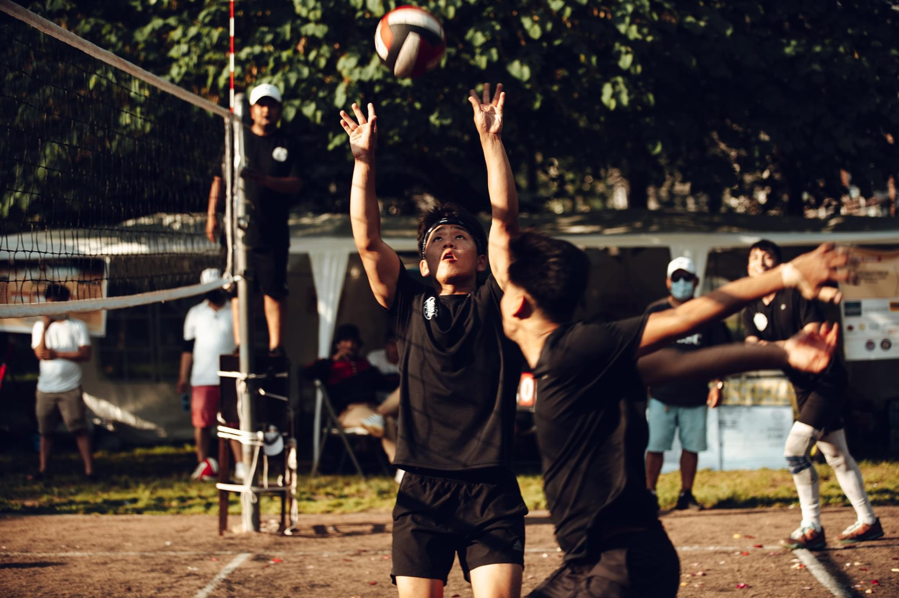

Boxing has been with me since day one. It is the one thing that allows me to escape everything and have peace in mind. I also believe that boxing is what defines me the most. I've competed as an amateur and participated in many events which has taught to become a more humble and a more disciplined person.
Volleyball is also a big part of my life and it is the sport that introduced me to many of my friends.

Spending a good amount of my day trying to improve my skills as a problem solver and a developer is also a huge interest of mine. I want to become a more competent developer who can work efficiently and work with other individuals who have similar interests.
I am a very outgoing person. Hiking, cliff-jumping, horse-back riding are some of the activities I really enjoy. It also keeps me healthy and my mind refreshed.